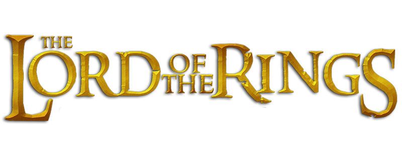

Trzy Pierścienie dla królów elfów pod otwartym niebem,
Siedem dla władców krasnali w ich kamiennych pałacach,
Dziewięć dla śmiertelników, ludzi śmierci podległych,
Jeden dla Władcy Ciemności na czarnym tronie
W Krainie Mordor, gdzie zaległy cienie,
Jeden, by wszystkimi rządzić, Jeden, by wszystkie odnaleźć,
Jeden, by wszystkie zgromadzić i w ciemności związać
W Krainie Mordor, gdzie zaległy cienie.
J.R.R. Tolkien
Wszak ten, kto na wojnie pierwszy uderzy dostatecznie mocno, może już nie potrzebować zadawać drugiego ciosu.
J.R.R. Tolkien
Połowy z was nie poznałem przynajmniej w połowie tak dobrze, jak powinienem, a mniej niż połowę z was lubię o połowę mniej, niż żeście sobie na to zasłużyli.
J.R.R. Tolkien